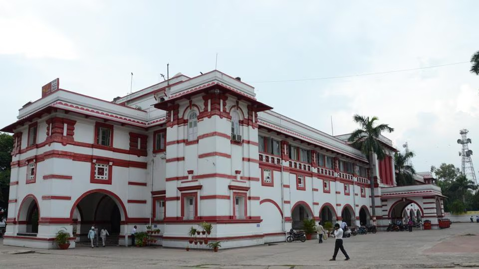
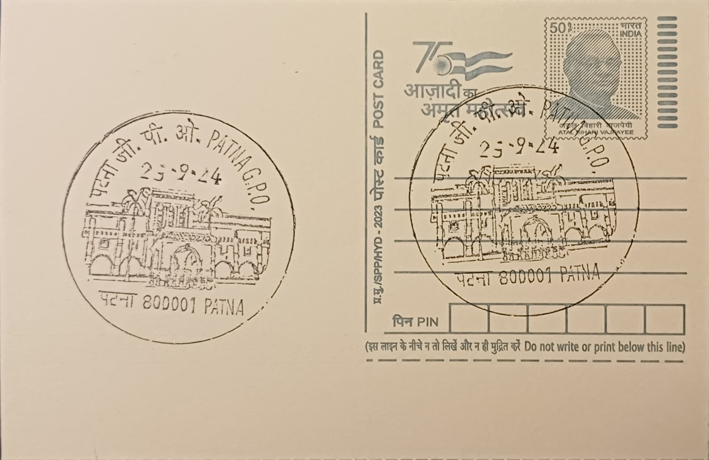

The General Post Office at Patna took shape as part of New Patna, the planned administrative quarter the British laid out from 1912 once Bihar and Orissa were carved away from the Bengal Presidency and given their own provincial capital. Sited on Buddh Marg amid the new seat of government, the building was conceived not as an incidental counter for letters but as a deliberate civic statement, pairing the colonial administration's postal and telegraph apparatus with the architectural dignity expected of a capital's principal public offices.
As the designated postal headquarters of the newly separated province, the GPO embodied the broader pattern by which colonial authorities marked each provincial capital with a grand Indo-European public building housing its postal exchange, and it has gone on to serve as the headquarters of India Post's Bihar Circle, placing it at the administrative apex of postal operations across the state rather than functioning merely as one branch among many.
Construction began with the laying of the keystone on 1 December 1912 and was completed in 1917, when the structure opened to the public under its original designation as the Post and Telegraph Office, at a reported cost of roughly 2.69 lakh rupees. The design is credited to the New Zealand-born architect Joseph Fearis Munnings, who rendered it in a Gothic Revival idiom, giving the building pointed arches and ornamental detailing that set it apart from the plainer classical treatment common to many contemporary district post offices and aligned it instead with the more elaborate civic architecture favoured in Calcutta and other major colonial centres.
Beyond its architectural distinction, the building's significance rests on the sheer administrative continuity it represents: Patna's postal infrastructure traces back through the city's long identity as ancient Pataliputra, capital in turn of the Mauryan and Gupta empires, and the GPO building itself has operated without interruption since 1917, making it more than a century old while still functioning as a working post office rather than a retired monument.
The scale of its present-day operations underscores that continuity in concrete terms: by 2017 the office was reported to be handling around one lakh letters and parcels daily through a complement of 96 postmen, alongside oversight of more than twelve lakh savings bank accounts routed through its counters. Recognised among the Department of Posts' listed heritage buildings, the Patna GPO today combines that formal heritage status with uninterrupted daily service, remaining the operational hub through which the state capital's mail and savings transactions are actually processed.
| Date of Introduction | September 25, 2024 |
|---|---|
| Address | Senior Postmaster, |
| Patna GPO, | |
| Patna (dt.), Bihar - 800001. |